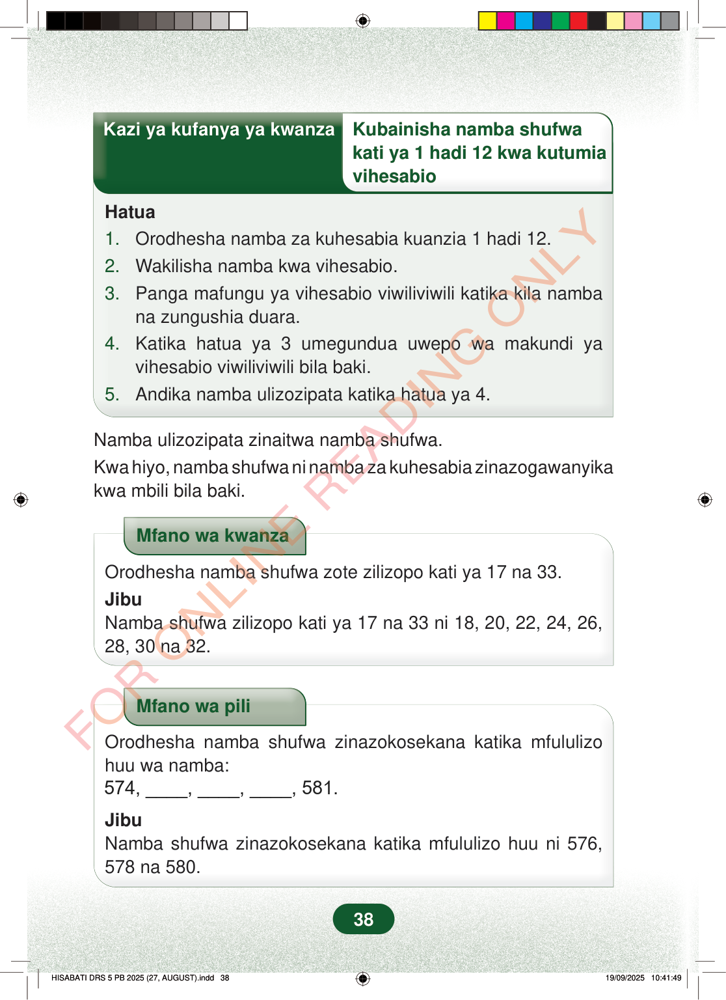

Kazi ya kufanya ya kwanzaKubainisha namba shufwakati ya 1 hadi 12 kwa kutumiavihesabioHatua1.Orodhesha namba za kuhesabia kuanzia 1 hadi 12.2.Wakilisha namba kwa vihesabio.3.Panga mafungu ya vihesabio viwiliviwili katika kila nambana zungushia duara.4.Katika hatua ya 3 umegundua uwepo wa makundi yavihesabio viwiliviwili bila baki.5.Andika namba ulizozipata katika hatua ya 4.Namba ulizozipata zinaitwa namba shufwa.Kwa hiyo, namba shufwa ni namba za kuhesabia zinazogawanyikakwa mbili bila baki.Mfano wa kwanzaOrodhesha namba shufwa zote zilizopo kati ya 17 na 33.JibuNamba shufwa zilizopo kati ya 17 na 33 ni 18, 20, 22, 24, 26,28, 30 na 32.Mfano wa piliOrodhesha namba shufwa zinazokosekana katika mfululizohuu wa namba:574, ____, ____, ____, 581.JibuNamba shufwa zinazokosekana katika mfululizo huu ni 576,578 na 580.38
Kazi ya kufanya ya kwanza Kubainisha namba shufwa
kati ya 1 hadi 12 kwa kutumia vihesabio
Hatua 1. Orodhesha namba za kuhesabia kuanzia 1 hadi 12. 2. Wakilisha namba kwa vihesabio. 3. Panga mafungu ya vihesabio viwiliviwili katika kila namba na zungushia duara. 4. Katika hatua ya 3 umegundua uwepo wa makundi ya vihesabio viwiliviwili bila baki. 5. Andika namba ulizozipata katika hatua ya 4.
Namba ulizozipata zinaitwa namba shufwa. Kwa hiyo, namba shufwa ni namba za kuhesabia zinazogawanyika kwa mbili bila baki.
Mfano wa kwanza
Orodhesha namba shufwa zote zilizopo kati ya 17 na 33. Jibu Namba shufwa zilizopo kati ya 17 na 33 ni 18, 20, 22, 24, 26, 28, 30 na 32.
Mfano wa pili
Orodhesha namba shufwa zinazokosekana katika mfululizo huu wa namba: 574, ____, ____, ____, 581.
Jibu Namba shufwa zinazokosekana katika mfululizo huu ni 576, 578 na 580.
38
Hatua za kubainisha namba shufwa kati ya 1 hadi 12 kwa kutumia vihesabio. Orodhesha 1 hadi 12, wakilisha kwa vihesabio, gawa kwa mafungu mawili sawa bila baki, kisha andika namba zilizopatikana.Kazi ya kufanya ya kwanzaKubainisha namba shufwa kati ya 1 hadi 12 kwa kutumia vihesabioHatua1.Orodhesha namba za kuhesabia kuanzia 1 hadi 12.2.Wakilisha namba kwa vihesabio.3.Panga mafungu ya vihesabio viwiliviwili katika kila namba na zungushia duara.4.Katika hatua ya 3 umegundua uwepo wa makundi ya vihesabio viwiliviwili bila baki.5.Andika namba ulizozipata katika hatua ya 4.Namba ulizozipata zinaitwa namba shufwa.Kwa hiyo, namba shufwa ni namba za kuhesabia zinazogawanyika kwa mbili bila baki.Mfano wa kwanza unaonyesha namba shufwa kati ya 17 na 33. Jibu ni 18, 20, 22, 24, 26, 28, 30 na 32.Mfano wa kwanzaOrodhesha namba shufwa zote zilizopo kati ya 17 na 33.JibuNamba shufwa zilizopo kati ya 17 na 33 ni 18, 20, 22, 24, 26, 28, 30 na 32.Mfano wa pili unaonyesha mfululizo wa namba kutoka 574 hadi 581 wenye nafasi wazi. Namba shufwa zinazokosekana ni 576, 578 na 580.Mfano wa piliOrodhesha namba shufwa zinazokosekana katika mfululizo huu wa namba:574, , , , 581.JibuNamba shufwa zinazokosekana katika mfululizo huu ni 576, 578 na 580.